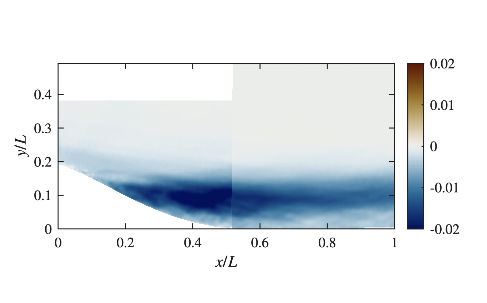

Setup
A symmetric Gaussian bump and a downward-facing ramp were tested in turn on a flat plate in a boundary layer wind tunnel. The bump imposes mild adverse, strong favorable, then strong adverse pressure gradient before recovering. The ramp imposes weak favorable, favorable, then strong adverse. I designed and built the test articles and fixtures.


Measurements
Planar particle image velocimetry captured the boundary layer upstream of and over each geometry, and pressure transducers measured the gradients imposed. The Clauser parameter reached β₀ ≈ −5.4 in the bump's favorable region and up to 3.4 in the adverse regions. Six cases (two geometries × three speeds) cover Re_τ from 889 to 2,920.

Coherent structures
Spectral POD of the velocity fields picks out the large-scale structures that convect through each pressure gradient region and shows how their strength and wall-normal position change with gradient history. ANSYS Fluent RANS simulations of the same geometries tested how well RANS predicts smooth-body separation.

Related: A. Borra, T. Saxton-Fox. Comparison of a turbulent boundary layer encountering a ramp versus a bump. TSFP 2024. Advised by Dr. Theresa Saxton-Fox.